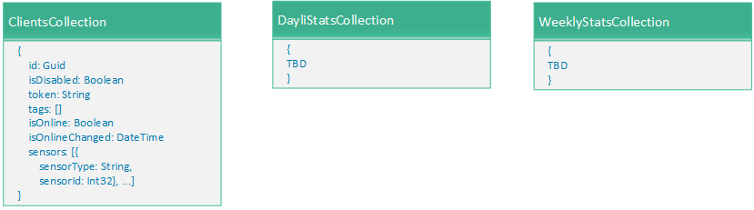

Welcome to Enttoi
Enttoi is system that collects sensors data, push them to centralized place, which allows to see their state in real-time and gather statistics.
Building blocks
The entire solution consists on number of repositories, which can be found here. The building procedures for each repository located in readme.md file within repositories.
Current high level architecture is as following:
Data Modeling
The data resides into two storage types:
-
Storage tables - store raw data as it received from censors.

- DocumentDB - configurations and processed state of clients and sensors 
Authors and Contributors
All contributers and authors can be found here.